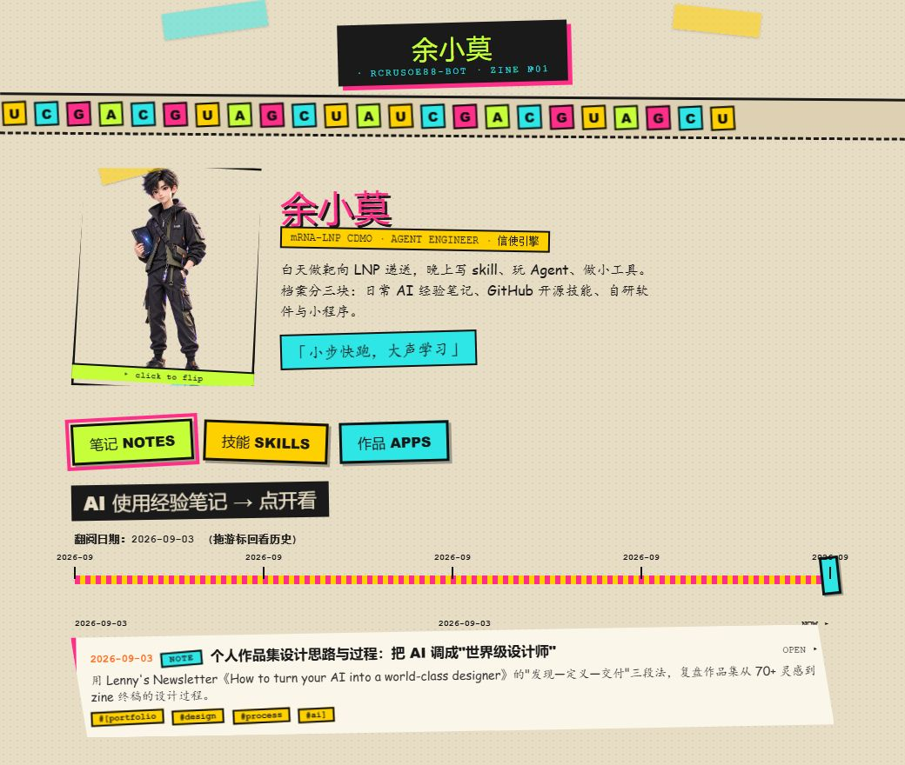
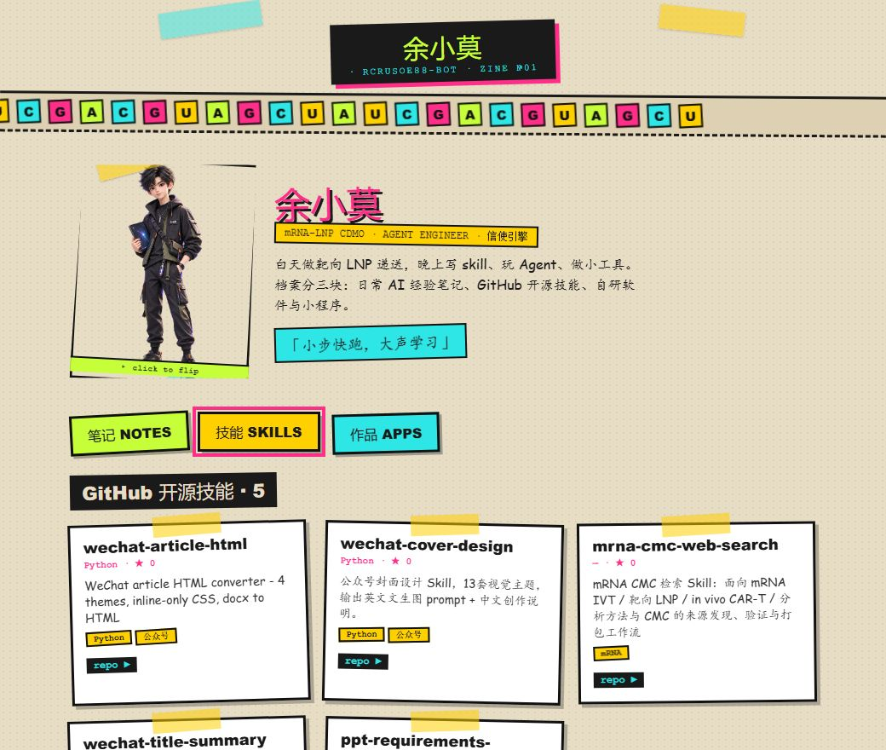
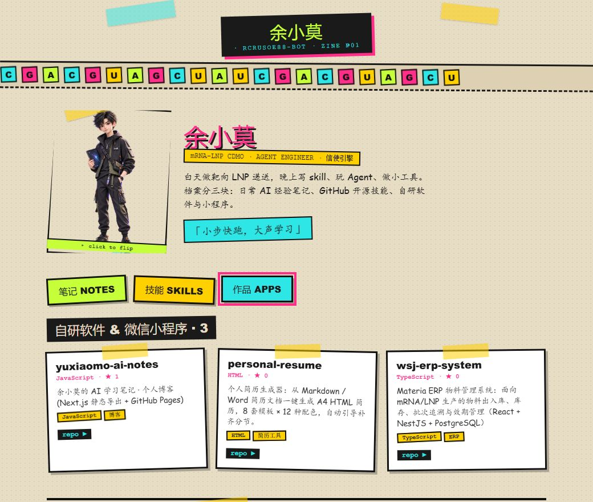

FIG. 3
手记索引
2026-09-04 WorkBuddy · 腾讯混元大模型 个人工作站设计
余小莫的个人工作站设计
一份 zine 风个人档案：从 70+ 想法收敛到三个 IP 因子，全程无设计类 Skill 参与。
2026-08-20 WorkBuddy + bsk 微信后台
浏览器自动化：DOM 文本比截图可靠自动化
让 Agent 抓公众号后台数据，canvas 图表页截图持续失败，改用 evaluate 直读 innerText 一次拿到全部数字。
2026-08-18 python-docx Elsevier PDF
一次图片嵌入失败的解剖排障
期刊 PDF 提取的 JPEG 嵌入 docx 报 UnrecognizedImageError。根因 Adobe APP14 头，python-docx 只认 JFIF，PIL 转存即愈。
2026-08-12 Windows + Git Bash GitHub raw
吊销检查引发的安装悬案安装
curl 抓 raw.githubusercontent 反复报 CRYPT_E_REVOCATION_OFFLINE。换托管 Python 的 urllib（OpenSSL 不做 Windows 吊销检查）一次通过。
← 返回手记索引
余小莫的个人工作站
2026-09-04 WorkBuddy · 腾讯混元大模型 个人工作站设计 阅读 5 分钟
这里收着我的三类产出：GitHub 上开源的 AI skill 、日常使用 Agent 的心得笔记 、以及自己开发的软件与微信小程序 。它不是一个千篇一律的开发者作品集，而是一份带着"基因"的个人档案——实验室的严谨、mRNA 的母题、和一个会换皮肤的自己。
先看看成品 不用看代码，先感受一下这个"工作站"长什么样。三种视图，讲的是同一件事：把我的工作，变成可以逛的展柜。

① 首页 · 一打开就是我的世界：牛皮纸底色、流动碱基链、IP 形象，以及最上方那条可拖拽的时间轴——往左拖，是在翻我自己的成长档案。

② 技能 · GitHub 开源 skill 的网格墙，每张卡都直连真实仓库、带语言与 star，点开即去。

③ 作品 · 我自研的软件与微信小程序，同样的拼贴语言，统一在一个视觉系里。
再聊聊怎么设计出来的 起点：难的不在"做网站" 把三类东西放进一个站，技术上不难。难的，是做出一个别人抄不走 的个人风格。大多数人让 AI 出设计时，拿到的是"让所有人都不反感的安全答案"——千篇一律的平庸。我不想这样。
DESIGNER = 大模型自己 —— 这个工作站，是 WorkBuddy 的腾讯混元大模型"原生"设计出来的。全程没有一个设计类专用 Skill 参与——没有 Claude Design，没有 Open Design，也没有任何"套模板"式的设计工具。它靠的就是大模型自身的能力：给方法、给审美判断、给实现，一气呵成。设计权回到了模型手里。 灵感来源：把 AI 调成"世界级设计师" 整件事的方法论，来自一篇反复读的文章——Lenny's Newsletter ·《How to turn your AI into a world-class designer》 。文章核心：大模型是"下一个最可预测 token"的预测器，默认选最安全的答案。要逼出好设计，得刻意推开可预测选项，用一套针对 AI 的流程。我几乎原样搬进了这个作品集，它把流程拆成三段：
Discover 发现 ：广撒网，列大量大胆、粗糙但能激发想象的方向，只求广度不求深度；Define 定义 ：确立一个鲜明的个人设计身份，把 AI 推出它熟悉的模式；Deliver 交付 ：打磨粗糙边缘，聚焦关键元素，产出惊艳成品。Discover：先铺 70+ 想法 我没急着做，而是按维度一口气铺开视觉美学、布局结构、交互动效、内容叙事、签名元素、技术实现等 70+ 条方向 ，每条一句话。目的就是把"可能性空间"撑开，避免一上来就落在最安全的默认方案。
Define：收敛到三个个人 IP 因子 从 70+ 里收口，最终拍板了最能体现"我"的三件事：
实验室笔记本风 + mRNA 序列母题 ：A/U/C/G 碱基色块、流动碱基链；双身份一键换肤 ：科研身份 ⇄ 极客身份，点一下整站换皮；Agent 吉祥物 ：后升级为我亲自设计的 IP 形象——黑绿工装、"余小莫"名牌、手持星系平板。Deliver：8 版对比，定调 zine 随后用"随机组合要素 + 多版本并排对比"试了复古终端、实验室笔记本、赛博水墨、暗色单荧光、北欧极简、玻璃拟态……最后定调拼贴 / zine 风 ——牛皮纸底、撕纸碎片、半透明胶带、撞色，正好和 IP 形象的橄榄绿天然咬合。
技术上也做了收口，把"会变的笔记"和"不变的壳"拆开：
展示层 ：单文件 zine 风页面，纯 HTML/CSS/JS，零运行时依赖；内容层 ：笔记用 Markdown，技能/作品用 JSON；构建层 ：零依赖脚本解析 Markdown、注入模板，生成首页与笔记详情页；同步 ：笔记丢进收件箱，自动构建、提交、推送，丢笔记即上线。这篇文章最值钱的一点：大多数人和 AI 只发挥了 1% 的创造力，是因为他们接受了第一个最可预测的输出。这版工作站之所以"不像默认生成物"，正是因为它走完了"广撒网 → 强身份 → 精打磨"的全过程——而这个过程本身，就是和 AI 协作做设计的可复用方法论。 来逛逛，且它会一直长 每写一篇笔记，工作站就多一块拼贴。它不是一个完结的展品，而是一个会自己生长的个人档案。
🌐 在线工作站：https://rcrusoe88-bot.github.io/yuxiaomo-workstation/ 💻 源码仓库：github.com/rcrusoe88-bot/yuxiaomo-workstation 📮 公众号：信使引擎 · 同名搜一搜就能找到 观察结论 → 好设计不是"让 AI 出图"，而是把"想要什么样的自己"讲清楚，再走完广撒网 → 强身份 → 精打磨。
← 返回手记索引
浏览器自动化：DOM 文本比截图可靠
2026-08-20 WorkBuddy + bsk 微信后台 阅读 5 分钟
让 Agent 去抓微信公众号后台的数据时，遇到一个反直觉的坑：canvas 图表页用截图拿不到数字 。bsk screenshot 在 canvas 区域反复报 image readback failed，持久失败。
改用 bsk evaluate 直接读 DOM 文本就通了：
document.body.innerText
一次拿到页面上全部可读数字，比截图再 OCR 稳得多。
另外，左侧子标签用 bsk click --ref 偶尔不触发 SPA 路由。稳妥做法是先用 evaluate 取真实 href，再 bsk navigate 过去。重载标签页后 ref 全部失效，必须先重新 snapshot。
一句话：Agent 操作网页，「读 DOM」优先于「看截图」；视觉是给人的，结构是给 Agent 的。
观察结论 → Agent 操作网页，「读 DOM」优先于「看截图」；视觉是给人的，结构是给 Agent 的。
← 返回手记索引
一次图片嵌入失败的解剖
2026-08-18 python-docx Elsevier PDF 阅读 5 分钟
从 Elsevier 期刊 PDF（PyMuPDF 提取）得到的图片，嵌进 python-docx 时报 UnrecognizedImageError。
根因在文件头：这些图是 Adobe APP14 型 JPEG ，文件头为 ffd8 ffee（常伴随 CMYK）。python-docx 只认标准 JFIF 头 ffd8 ffe0 / ffe1。PIL 能正常打开（报 mode RGB），问题只在 python-docx 的头识别这一步。
解决办法一句话：
Image.open(p).convert('RGB').save(out, 'JPEG', quality=90)
转存成标准 JPEG 再嵌入即可。中文字体用 run.font.name='Times New Roman' 配合 rFonts 的 w:eastAsia='宋体' 设置。
一句话：报错信息只指到门口，真正的根因常在文件头的两个字节里。
观察结论 → 报错信息只指到门口，真正的根因常在文件头的两个字节里。
← 返回手记索引
吊销检查引发的安装悬案
2026-08-12 Windows + Git Bash GitHub raw 阅读 5 分钟
从 GitHub 安装技能时，curl 抓 raw.githubusercontent.com 反复报 CRYPT_E_REVOCATION_OFFLINE，curl 还偶发 error 23 写文件失败。
根因是 Windows schannel 的证书吊销检查 在离线/受限网络下会卡死。托管 Python 用的是 OpenSSL，不做 Windows 的吊销检查，所以换用它抓取原始文件一次通过：
urllib.request.urlopen(url).read()
配套坑：Git Bash 的 /tmp 与 Windows 原生 Python 解析的 /tmp 不是同一目录。文件要写到明确的 Windows 绝对路径（如 C:/Users/wsj19/...），两边才能一致访问。
一句话：同一份代码，换一条 TLS 栈，结论完全不同——排查时先怀疑环境，再怀疑自己。
观察结论 → 同一份代码，换一条 TLS 栈，结论完全不同——排查时先怀疑环境，再怀疑自己。